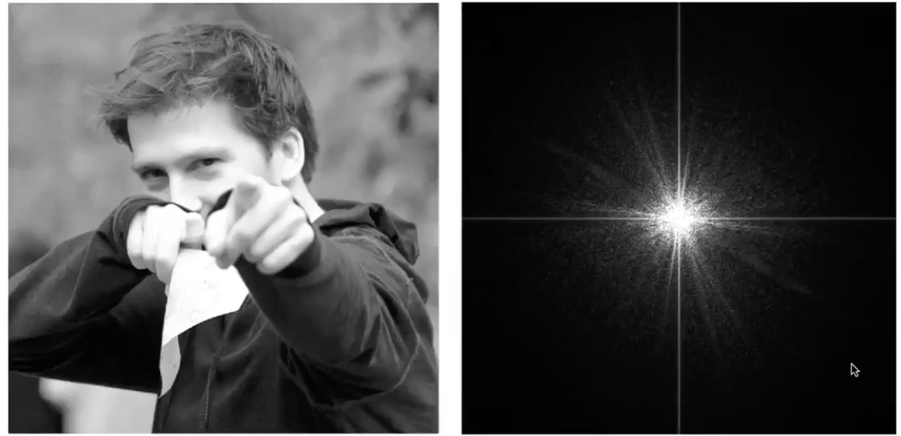
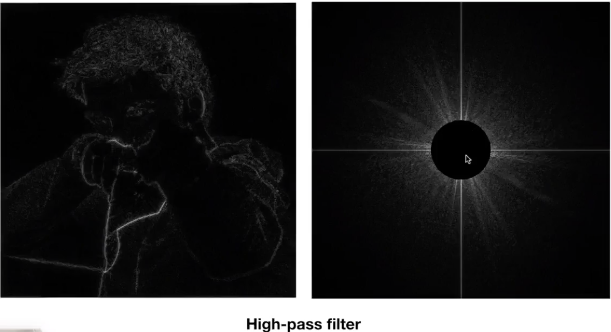
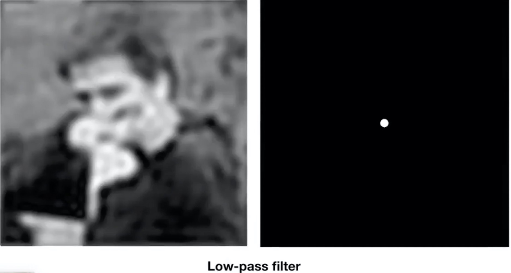
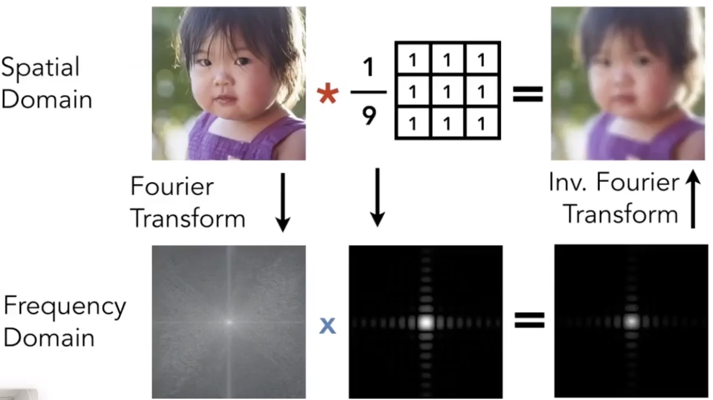
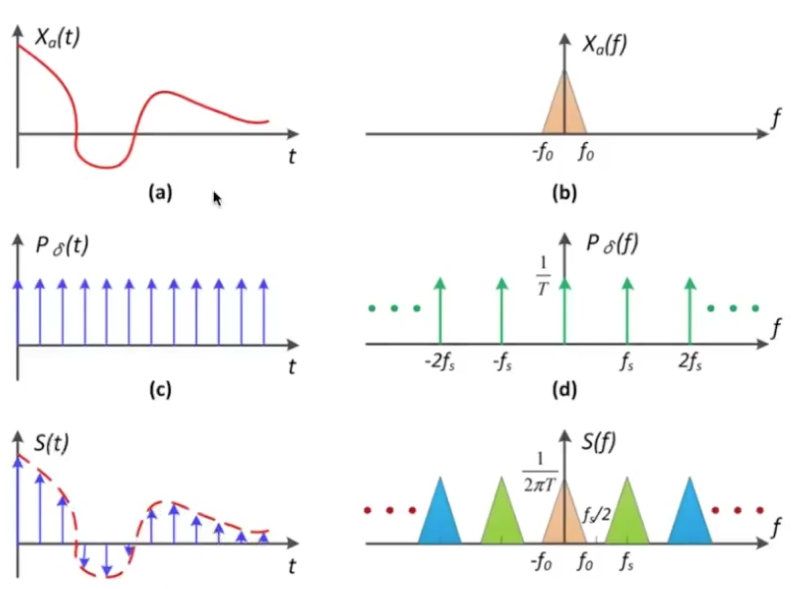
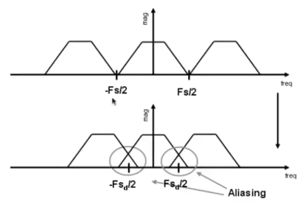
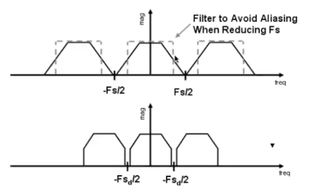
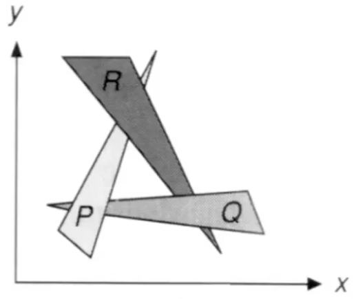
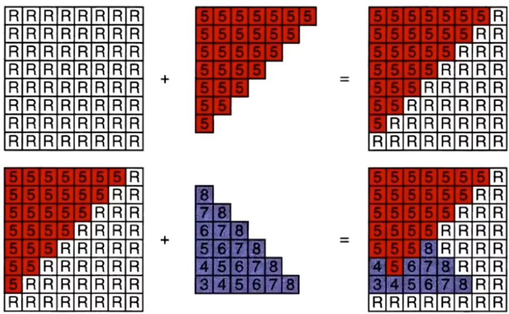
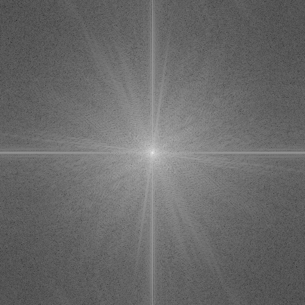

反走样(anti aliasing)
采样产生的问题
原因
信用变化太快，采样的速度跟不上
频域
傅里叶变换：将时域变成频域
任何一个周期函数都可以写成一系列余弦函数的组合
反傅里叶变换
频率也可以换成函数
采样的频率和函数的频率不一致导致走样
针对两个频率完全不同的函数，但是采样出来的结果无法区分他们
滤波(filtering)
去掉一系列频率内容

我们将一张图由时域变成频域，我们发现中心区域(低频)比较亮，四周(高频)比较暗
我们将它进行”高通滤波”之后得到下图，频域图中心原本比较亮的区域变暗；时域图也只留下一些边缘

如果将其进行”低通滤波”，频域图只留下中心原本比较亮的；时域图变得模糊

卷积
卷积 = 滤波 = 加权平均

从上图我们得出以下结论
- 将图片和卷积核进行傅里叶变换转成频域，相乘，然后逆傅里叶变换，相当于时域上的卷积
- 时域的卷积 = 频域上的乘积
这个3X3的卷积核，其实就是一个低通滤波器，还有其他各种各样的卷积核。
采样
重复原始信号的频谱

左边时域上周期函数乘以采样函数（图上为冲激函数），得到采样结果。相当于右边的频域上，进行卷积
走样
频域上的内容产生混叠

反走样

深度测试
画家算法
从远到近开始画。但是这种算法还有缺陷

遇到这种两两重叠的图片画家算法就会失效了
深度测试算法
- 每次采样都为每个像素保存当前的最小深度z
- 需要额外的buff来保存深度的值
- frame buffer 保存color
- depth buffer 保存depth
伪代码
1
2
3
4
5
6
7
|
for x in X:
for y in Y:
for triangle in triangles:
if sample(x,y,triangle):
if z < zbuff[x][y]:
framebuff[x][y] = color
zbuff[x][y] = z
|

z-fighting
当两个或者多个物体距离摄像机相同/相似的距离的时候，会产生物体的重叠部位便不停的闪烁。z-fighting顾名思义就是渲染的时候不同物体”抢”相同的z-buff的值
常用解决方案：
- 建模的时候不要让模型之间的距离太近
- 人为确定渲染顺序
- Polygon offset
- 使用精度更高的z-buff
参考
Lecture 06 Rasterization
傅里叶变换
卷积
在线傅里叶变换
常见卷积核
threejs- z-fighting 问题
参考代码
傅里叶变换
1
2
3
4
5
6
7
8
9
10
11
12
|
import numpy as np
from PIL import Image
img = Image.open('./16_5.png').convert('L') #转成灰度图
im_arr = np.array(img)
f = np.fft.fft2(im_arr) # 傅里叶变换
## 以上已经完成了傅里叶变换了，下面的都是为了展示这张变换后的图所进行的操作
fshift = np.fft.fftshift(f) # 默认结果中心点位置是在左上角，转移到中间位置
fimg = np.log(np.abs(fshift)) #fft结果是复数, 其绝对值结果是振幅
fimg = (fimg - fimg.min()) / (fimg.max() - fimg.min()) # 归一化
result = Image.fromarray((fimg * 255).astype(np.uint8))
result.save('16_6.png')
|

滤波
1
2
3
4
5
6
7
8
9
10
11
12
13
14
15
16
17
18
19
20
21
22
23
24
|
import numpy as np
from PIL import Image
img = Image.open('16_7.png')
im_arr = np.array(img)
kernel = np.ones((3, 3)) / 9
sz = im_arr.shape
sz = (sz[0] - kernel.shape[0], sz[1] - kernel.shape[1])
kernel = np.pad(kernel, (((sz[0] + 1) // 2, sz[0] // 2), ((sz[1] + 1) // 2, sz[1] // 2)), 'constant') #填充成跟原图大小
f = np.fft.fft2(im_arr) # 傅里叶变换
f_kernel = np.fft.fft2(kernel) # 傅里叶变换
newf = np.fft.ifft2(f * f_kernel) # 时域上的卷积就是频率上的乘积，反傅里叶变换
### 画图
fshift = np.fft.fftshift(newf) # 默认结果中心点位置是在左上角，转移到中间位置
fimg = np.abs(fshift) #fft结果是复数, 取实数部分
fimg = fimg.clip(0, 255)
new_image = np.rint(fimg).astype('uint8')
result = Image.fromarray(new_image)
result.save('16_8.png')
|